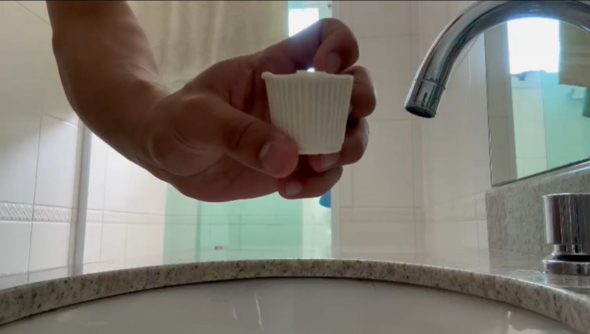
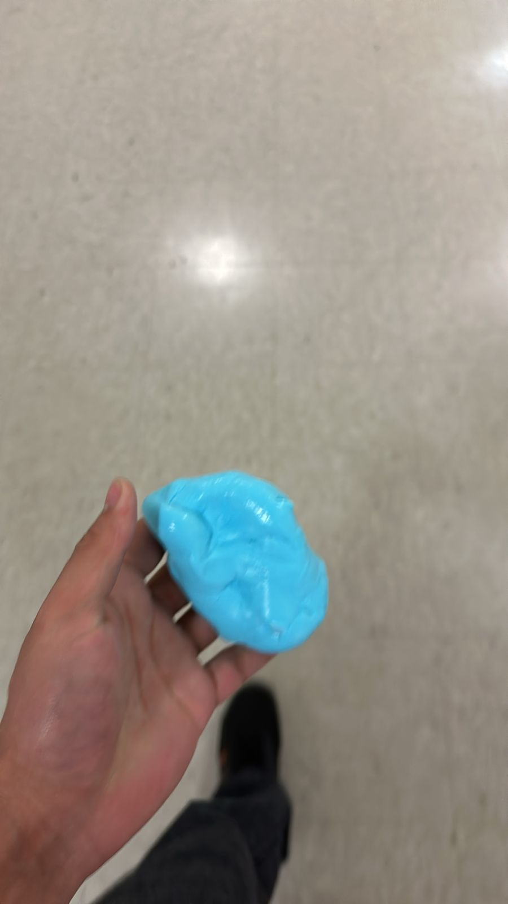
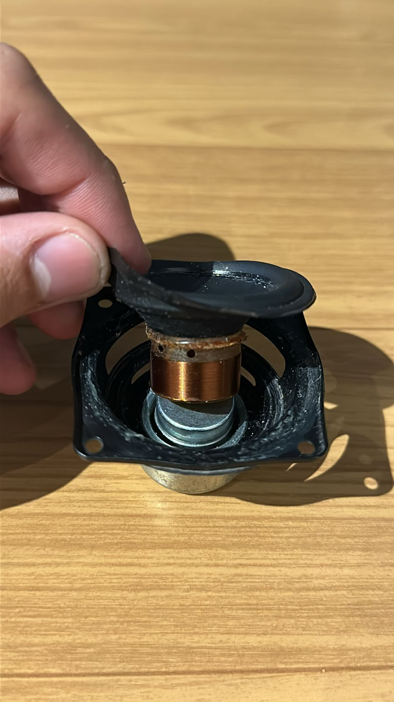

Em ciências da natureza, as atividades que eu mais gostei foram as seguintes:
1- Experimento fazendo sabão a base de óleo

Em ciências da natureza, é muito comum nós aprendermos a reciclar mais as coisas, neste dia, utilizamos óleo de cozinha usado para a confecção de um sabão. O sabão era ideal para objetos gordurosos, obtendo um ph ácido ajudando da disseminação da gordura acumulada.
2- Experimento fazendo slime

Nesse trabalho, nós trouxemos de casa um pouco de cola branca, água boricada e fizemos essa slime com mais alguns reagentes que tinha dispoível no laboratório.
3- Experimento com eletro-ímã

Para finalizar, uma das atividades que eu mais gostei, foi a com eletro-ímãs. A energia atua no campo magnético do imã contido no alto falante, movendo o cone e então gerando ondas sonoras.